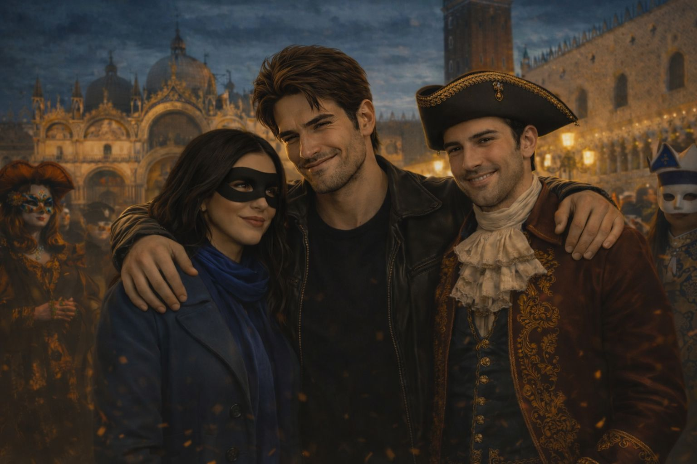

Audiolibro
Maschera di Venezia
Illustrazione, ascolto e testo sincronizzati capitolo per capitolo

Piazza San Marco, il Carnevale e l'apparizione della donna misteriosa.
«
»
▶
Capitolo 1 di 2
Il primo incontro
Capitolo 1